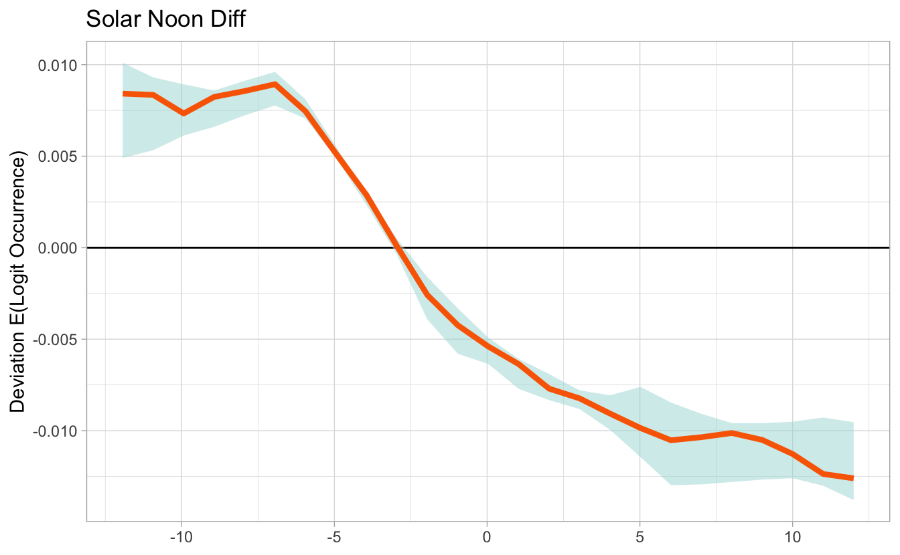

Lesson 4 Non-raster Data
4.1 Objective
To use the non-raster data to examine habitat associations and as a diagnostic tool to assess predictive performance.
4.2 Introduction
If we use ebirdst_download(tifs_only = FALSE), the data packages that get downloaded will contain two additional SQLite database that provide:
- Information about the modeled relationships between estimated occurrence and the ecological covariates used in the model in the form of predictor importance (PI) estimates and partial dependence (PD) relationships
- Information about the statistical performance of the models, which can be use to estimate a suite of predictive performance metrics (PPMs)
These data are provided at the level of the individual stixels that make up the ensemble that produces the abundance estimates. Stixels are identified by their centroid in space and time, which allows for calculation of PIs, PDs, and PPMs within a specific region and season by summarizing across just those stixels whose centroids that fall within the given region and season.

We’ll start by loading packages and defining a focal region and time period: Louisiana during the breeding season.
library(ebirdst)
library(raster)
library(sf)
library(rnaturalearth)
library(dplyr)
library(ggplot2)
# louisiana
la <- ne_states(iso_a2 = "US", returnclass = "sf") %>%
filter(name == "Louisiana")
# breeding season
logshr_run <- filter(ebirdst_runs, common_name == "Loggerhead Shrike")
start_dt <- logshr_run$breeding_start
end_dt <- logshr_run$breeding_end
# ebirdst_extent object
la_breeding <- ebirdst_extent(la, c(start_dt, end_dt))
# loggerhead shrike data path
sp_path <- get_species_path("logshr")4.3 Effective extent
For a given region and time period, stixel_footprint() produces a raster showing the spatial footprint of all the stixels whose centroids of fall within the given region and hence contribute to the model estimates there. To visualize this footprint, use plot().
footprint <- stixel_footprint(sp_path, la_breeding)
plot(footprint)
4.4 Predictive performance metrics
We can use ebirdst_ppms() to calculate predictive performance metrics (PPMs) within a given region and season, here Louisiana during the breeding season, then call plot() to visualize these PPMs
ppms <- ebirdst_ppms(sp_path, la_breeding)
plot(ppms)
4.5 Predictor importance
The stixel-level data can also be used to identify the most importance predictor variables in the model for a given region and season.
# load predictor importance data
pis <- load_pis(sp_path)
# plot the predictor importances for louisiana in the breeding season
plot_pis(pis, ext = la_breeding, by_cover_class = TRUE, n_top_pred = 25)
4.6 Partial dependance
We can also produce partial dependence plots that show the relationship between a given model covariate and the occurrence probability. Let’s start by loading the PD data within the given region and season.
pds <- load_pds(sp_path, ext = la_breeding)Smoothed partial dependence curves for a given predictor can be plotted using plot_pds(). Confidence intervals are estimated through a processing of subsampling and bootstrapping. This function returns the smoothed data and CIs and plots these data. For example, let’s look at the impact of checklist start time (expressed as the difference in hours from solar noon) on the probability of observing a species.
# in the interest of speed, run with 5 bootstrap iterations
# in practice, best to run with the default number of iterations (100)
pd_smooth <- plot_pds(pds, "solar_noon_diff", ext = la_breeding, n_bs = 5)
As you’d expect, early morning is the best time to observe Loggerhead shrike. We also have access to the data behind this smoothed PD curve.
dplyr::glimpse(pd_smooth)
#> Rows: 25
#> Columns: 4
#> $ x <dbl> -11.9272, -10.9303, -9.9335, -8.9366, -7.9397, -6.9428, -5.9460, -4.9491, -3.9522, -2.9553, -1…
#> $ pd_median <dbl> 8.42e-03, 8.35e-03, 7.33e-03, 8.24e-03, 8.56e-03, 8.93e-03, 7.45e-03, 5.14e-03, 2.88e-03, 9.07…
#> $ pd_lower <dbl> 0.004907, 0.005326, 0.006127, 0.006603, 0.007228, 0.007768, 0.007055, 0.004898, 0.002337, -0.0…
#> $ pd_upper <dbl> 0.010101, 0.009306, 0.008928, 0.008586, 0.009114, 0.009606, 0.008104, 0.005532, 0.002993, 0.00…In addition to the effort covariates, we can also look at the relationships for the ecological covariates. For example, we saw from the PI plot that “dense herbaceous” is an important covariate, so let’s example the PD curve for that variable. We can find it, and all other model covariates, listed in the ebirdst_predictors data frame.
ebirdst_predictors %>%
filter(lc_class_label == "Dense Herbaceous") %>%
select(predictor_tidy, predictor_label)
#> # A tibble: 2 x 2
#> predictor_tidy predictor_label
#> <chr> <chr>
#> 1 mcd12q1_lccs1_fs_c31_1500_ed Dense Herbaceous ED
#> 2 mcd12q1_lccs1_fs_c31_1500_pland Dense Herbaceous PLAND
pd_smooth <- plot_pds(pds, "mcd12q1_lccs1_fs_c31_1500_pland", ext = la_breeding,
n_bs = 5)
So, Loggerhead Shrike has a strong positive association with dense herbaceous cover during the breeding season in Louisiana.
4.7 Habitat association
Finally, the PI and PD information can be combined to produce habitat charts similar to those available on the eBird Status and Trends website. The charts visualize how species associate with different habitat types throughout the year, giving both the strength and direction of that association.
habitat <- ebirdst_habitat(sp_path, ext = la_breeding)
plot(habitat)